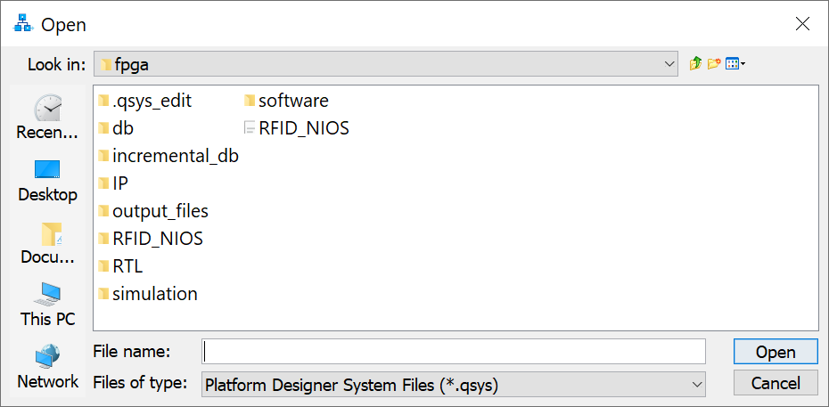
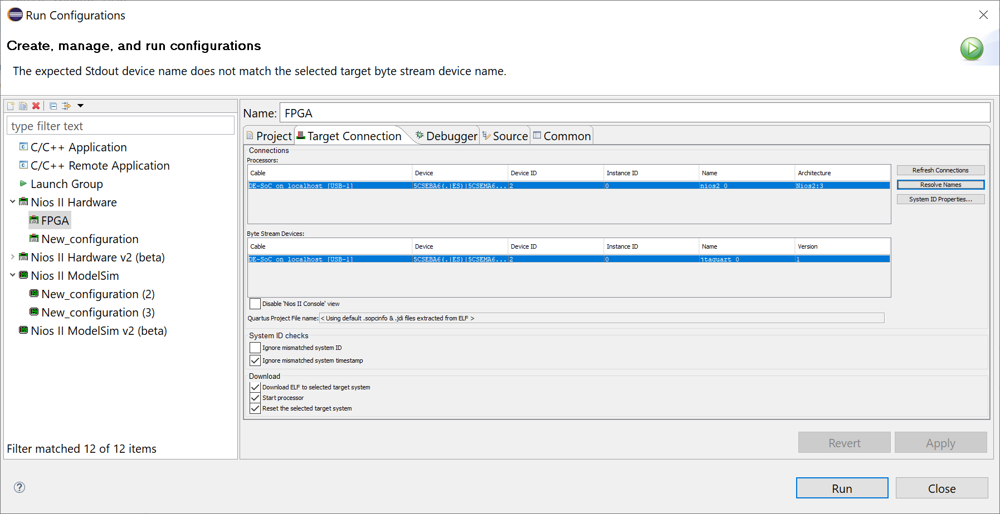

Getting started¶
Tools¶
To be able to use the Conformance Tester for Tags EPC-GEN2 UHF RFID, you'll need the following tools:
- Hardware:
- DE10-Standard + accessories
- jumpers
- Software:
- Quartus Prime Lite Edition 18.1
- Cyclone V device support
- ModelSim-Intel FPGA Edition
- git
You can find the Quartus and ModelSim software downloads here. The user manual for the DE-10 Standard board can be found here.
Cloning¶
To clone the project, run the following command on your preferred terminal.
git clone <https://github.com/pfeinsper/21b-indago-rfid-conformance-tester.git>
The repository is now cloned, and you can start testing/running the project.
Testing / Running¶
First, launch Quartus Prime. After launching, click on File ➡️ Open Project. A window will pop up, and you need to choose the rfid-conformance-tester.qpf file, located in the fpga folder of the repository. The video below shows how to do so.
Once the project has been opened, you can work on it; however, the steps to run the project depend on whether you want to simulate using ModelSim or whether you want to launch on the DE-10 Standard board.
ModelSim guide¶
To test and simulate the project on ModelSim, the first step is to check the files present in the project. Click on Project ➡️ Add/Remove Files in Project. It should look like the picture below.
 ModelSim project files
ModelSim project files
After checking the files, go to Project Navigator on the left panel, click on the dropdown menu that says Hierarchy, then click on Files. After that, right-click on the RTL/rfid.vhd file, and click on the option that says Set as Top-Level Entity. Now you can click on the blue play button next to the stop button to start the compilation.
Once the project is compiled, click on Tools ➡️ Platform Designer. A new window should open. Find the RFID_NIOS.qsys file, and open it.
 Platform Designer qsys file window prompt
Once you've opened the file, it should show the project's design. On this window, click on Generate ➡️ Generate Testbench System....
 Platform Designer schematic with peripherals
Platform Designer schematic with peripherals
Make sure the settings are as follows, and click on Generate on the bottom.
 Generate testbench window prompt with settings
Generate testbench window prompt with settings
Next, you wanna open up the Nios® II Software Build Tools for Eclipse. If it's your first time opening this tool, the Eclipse window will ask you to choose a workspace. Now the Eclipse window should be open with a blank workspace like the one below.
 Eclipse workspace
Eclipse workspace
The next step is to import our projects into Eclipse. Go to File ➡️ Import, and it should show a window like the one below. Click on Nios II Software Build Tools Project ➡️ Import Nios II Software Build Tools Project, then click Next.
 Import project window prompt
Import project window prompt
Now you need to click on the Browse button and look for the project. The projects are located at 21b-indago-rfid-conformance-tester/fpga/software. First, import the rfid_test project, then click Finish, and make sure that the Clean project when importing box is checked. Do the same steps for the rfid_test_bsp project.
 Import project second window prompt
Import project second window prompt
After both projects have been imported, right-click on rfid_test_bsp ➡️ BSP Editor. It will open a window like the one below. Make sure that the options are all the same.
 BSP Editor settings for ModelSim
BSP Editor settings for ModelSim
You also need to check the enable_small_driver box on the Drivers tab.
After checking the settings, click on the Generate button. Once you generated the BSP, open up the config.h file in the helpers folder of the rfid_test project, and make sure that the value of the MASK_LOOPBACK is set to 1. After that, save the config.h file, right-click the rfid_test project and click on Build Project.
If you had any errors, try cleaning both projects, generating the BSP and rebuilding the project.
Once the build is complete, go to Run ➡️ Run configurations. It should open up a new window. Right click on Nios II Modelsim, and click on New. A new ModelSim run configuration has been created, and you can click on Run to simulate. The image below shows the configuration settings.
 ModelSim run configuration window prompt
ModelSim run configuration window prompt
You can also watch the video below, which shows the step-by-step process.
Hardware guide¶
Important: If you want to launch the project on the DE-10 Standard board, a Quartus License is required.
To launch the project on the DE-10 Standard board, the first step is to check the files present in the project. Click on Project ➡️ Add/Remove Files in Project. It should look like the picture below.
 Hardware implementation project files
Hardware implementation project files
If you are missing the RFID_NIOS.qip file, you can generate it using the Platform Designer. You can follow the same instructions used on the ModelSim guide to open the Platform Designer and open the project's design.
Once the design is open, click on Generate ➡️ Generate HDL.... The settings should match the ones present in the image below. After that, just click on the Generate button, and it should generate the IP variation file.
 Generate HDL window prompt with settings
Generate HDL window prompt with settings
After checking the files, go to Project Navigator on the left panel, click on the dropdown menu that says Hierarchy, then click on Files. After that, right-click on the RTL/rfid_nios_HW.vhd file, and click on the option that says Set as Top-Level Entity. Now you can click on the blue play button next to the stop button to start the compilation.
After compiling, go to Tools ➡️ Programmmer to program the board. Be sure that the board is plugged in before opening.
Quartus Programmer window
If your board is not showing up on the Hardware menu on top, click on Hardware Setup, then double click on your board in the menu. After selecting your board, close this window.
 Hardware Setup window prompt
Hardware Setup window prompt
Once your board is shown in the Hardware menu, click on the Auto Detect button on the left menu, and select the corresponding device name for your board (it is engraved on the chip, shown in the image below).
 Cyclone V device chip (image obtained here)
Cyclone V device chip (image obtained here)
{kind=link}
After selecting the corresponding device name, the program may show two chips: one named SOCVHPS and the other with your device. Double-click on the File tab next to the name of your device, and look for the rfid-conformance-tester.sof file for the compiled project, located on the 21b-indago-rfid-conformance-tester/fpga/output_files folder.
Once you selected the file, check the Program/Configure box next to your device as is shown in the image below, then click on Start to program the board. Once it's finished, you can close the Programmer window.
 Quartus Programmer window with board detected
Quartus Programmer window with board detected
After programming the board, get a female/female jumper, plug one end on pin 6 of the GPIO header and the other end on pin 7 of the GPIO header, as shown in the image below.
 GPIO schematic showing jumper connections (image obtained here)
GPIO schematic showing jumper connections (image obtained here)
{kind=link}
Once the jumpers are connected, open up the Nios® II Software Build Tools for Eclipse. You can follow the same steps shown in the ModelSim guide on how to do so.
After both projects have been imported, right-click on rfid_test_bsp ➡️ BSP Editor.Make sure that the options are the same as the ones present in the image below (they are not the same settings from the ModelSim guide).
BSP Editor settings for hardware
The enable_small_driver box on the Drivers tab needs to be kept checked.
After checking the settings, click on the Generate button on the editor. Once you generated the BSP, open up the config.h file in the helpers folder of the rfid_test project. This time, the value of the MASK_LOOPBACK needs to be set to 0. After that, save the config.h file, right-click the rfid_test project and click on Build Project.
If you had any errors, try cleaning both projects, generating the BSP and rebuilding the project.
Once the build is complete, go to Run ➡️ Run configurations. It should open up a new window. Right click on Nios II Hardware, and click on New. Once the configuration has been created, go to the Target Connection tab, and check if the settings are the same as the one shown in the image below. Once you checked the settings, you can click on Run to launch.
 Hardware run configuration window prompt
You can also watch the video below, which shows the step-by-step process.
Hardware guide (handshake)¶
You can also run a handshake version of the project using two DE-10 Standard boards. To do so, follow the same steps shown on the hardware guide until you reach the rfid_test project build. Before building the project, you need to find the tag.c and reader.c files, located in the fpga folder.
Choose one board to act as the tag, and one board to act as the reader; after that, replace the code present in the main.c with the corresponding code (one board will have the tag.c code and the other will have the reader.c code).
After overwriting the code, build the project on each Nios workspace (you can open up two workspaces on the same PC, but it is a little trickier to do so; hence, it is recommended that you do this on two PCs). Once the projects are built, use female/female jumpers to connect the board pins as shown in the image below.
 GPIO schematic with jumper connections (image obtained here)
GPIO schematic with jumper connections (image obtained here)
After properly connecting the pins, you can use the same run configurations created on the hardware guide to run the project.
Important: First, launch the tag configuration, and wait for the Nios II Console to print the waiting for query message. After that, you can launch the reader configuration.
You can also watch the video below, which shows the step-by-step process.
How to collaborate¶
Firstly, you should create a fork of the original repository to work on. You can learn how to do so here. After creating your own fork, you can open a pull request to this repository. The instructions on how to do it can be found here. After making your pull request, it will be reviewed by one of the team members, and if everything's ok, they will approve it. If there are problems with your pull request, the reviewer will inform you of them, and you can make the adjustments necessary.